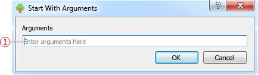

Для запуска игры/мода можно воспользоваться либо виджетом отображения доп. информации приложения, либо всплывающем(контекстным) меню виджета отображения списка игр/модов.
Для запуска игры/мода с параметрами необходимо воспользоваться всплывающем(контекстным) меню виджета отображения списка игр/модов.
